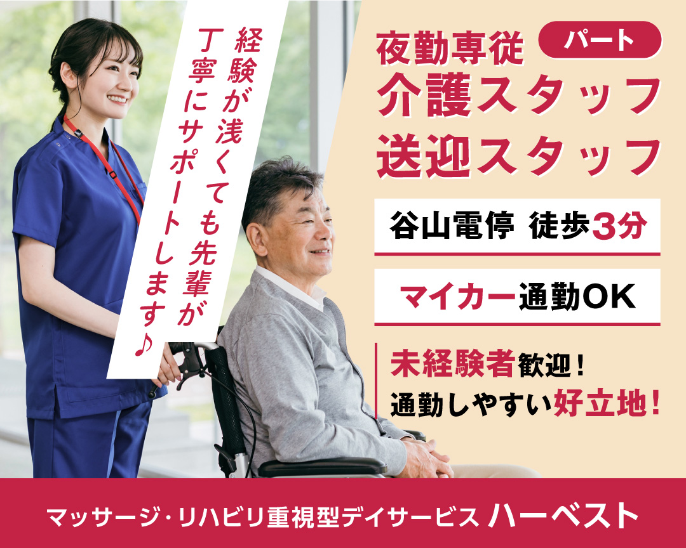

有料老人ホーム（入居最大8名）での夜間介護業務です。
デイサービス利用者のご自宅と施設間の送迎が中心業務です。
朝の部・夕方の部どちらか一方のみでも可。週1日〜相談可能。
休日：シフト制
| 雇用形態 | パート |
|---|---|
| 雇用期間 | 6ヶ月間（定めあり） 試用期間：3ヶ月 |
| 年齢 | 不問 |
| 学歴 | 不問 |
| 経験 | 不問（未経験者歓迎） |
| 必須資格 | 普通自動車運転免許（AT限定可） |
| 夜勤専従スタッフ | 日給 14,000円 |
|---|---|
| 送迎スタッフ | 時給 1,050円 |
| 通勤手当 | 実費支給（月額上限5,000円） |
| 社会保険 | 社会保険完備（条件による） |
| 制服 | 貸与あり |
| 駐車場 | 敷地内無料駐車場あり（マイカー通勤可） |
| 会社名 | 株式会社 ハーベスト |
|---|---|
| 所在地 | 〒891-0113 鹿児島県鹿児島市東谷山2丁目40‐15 |
| アクセス | 谷山電停より徒歩3分 |
| 事業内容 | 鍼灸マッサージ治療院・デイサービス・有料老人ホーム |
| 施設規模 | デイサービス最大18名、入居最大8名（小規模） |
| 施設状況 | 移転4年目、施設が新しい |